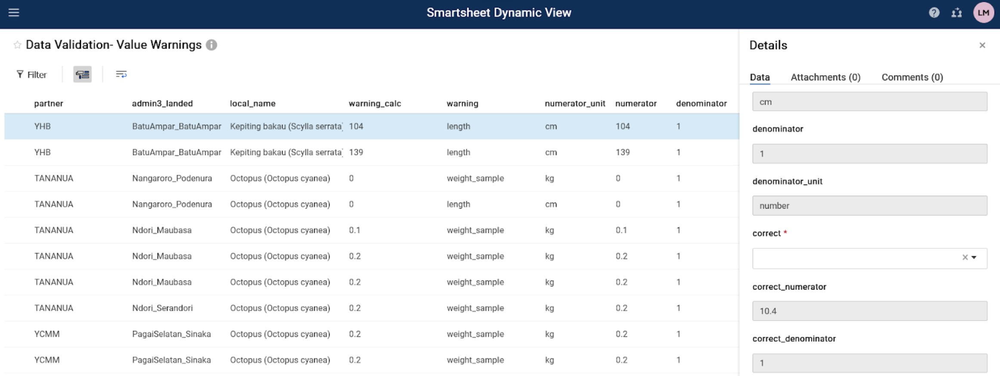

Data Validation
Guia De Validação Dos Dados Das Pescas
Todos os dados que fluem através do sistema de dados das pescas são validados no Smartsheet. Os dados são enviados para validação em dois cenários: 1) novos nomes são adicionados manualmente no Kobo Collect, ou 2) um valor numérico ultrapassa os limites estabelecidos. Uma vez validados os dados, os conjuntos de dados principais na base de dados e as tabelas de referência são actualizados. As tabelas de referência servem como entradas para listas suspensas em formulários KoboToolbox e contêm dados que são adicionados aos conjuntos de dados principais através de junções. Ver a árvore de decisão abaixo (Figura 1).
Os dados acionados para validação são enviados para uma das três tabelas: 1) Nome do desembarque QA, 2) espécie QA ou 3) Avisos de valor QA. As instruções abaixo detalham o processo de validação de dados no Smartsheet para as três tabelas de validação. Cada tabela de validação exigirá a seleção do valor do campo correto em uma lista suspensa ou a inserção manual dos valores corretos. O processo será anexado para futuras necessidades de validação de dados, conforme necessário.
Etapa 1: Fornecer à Barefoot Ocean endereços de E-mail de ponto de contato para os responsáveis pela validação dos dados.
A organização que gere múltiplos parceiros Pode fornecer todos os pontos de contacto.
Os parceiros individuais podem fornecer informações sobre pontos de contacto.
Os pontos de contacto receberão notificações de validação de dados por correio electrónico.
Passo 2: Verifique se há um pedido de validação de dados no seu e-mail.
Você receberá um e-mail de ” Smartsheet Automation “(Figura 2)
O e-mail conterá uma mensagem com links para prosseguir com a validação através de uma “Visualização Dinâmica” ou “solicitação aberta”. A visualização dinâmica é um formato de tabela e a solicitação aberta o direcionará para um formulário de validação.
Para abrir com ” visualização dinâmica “(Etapa 3, Opção A), clique no link que começa com”https://dynamicview.smarthseet.com….”
Para abrir o formulário de solicitação de atualização (Etapa 3, Opção B), clique no botão azul ” abrir solicitação
Uma prévia das entradas que precisam ser validadas aparecerá abaixo desta mensagem, mas você não poderá validar nenhum dado diretamente no e-mail
Na parte inferior do E-mail, há um link para “ir para a planilha”; no entanto, a planilha subjacente tem acesso restrito. Reveja a validação dos seus dados através da visualização dinâmica, do pedido aberto ou do Relatório específico do seu parceiro (em breve).
Figura 1: Árvore de decisão de validação de dados.

Figura 2: Exemplo De Mensagem De E-Mail De Validação Do Smartsheet

Passo 3, Opção A: concluir a validação dos dados através da Visualização Dinâmica (recomendado)
Para essa opção, você precisará criar uma conta gratuita do Smartsheet. Você será direcionado a partir do E-mail para configurar uma conta.
Clique no link visualização dinâmica na solicitação de E-mail.
Uma nova janela do navegador da Internet será aberta com uma configuração semelhante a uma tabela para todas as entradas. Aqui, você pode facilmente percorrer todas as entradas que precisam de validação.
Clique em uma linha para iniciar a validação.
Um painel” Detalhes ” aparecerá à direita.
Revise os campos de contexto e preencha os campos de validação. Os campos de validação contêm os dados que serão transferidos para o conjunto de dados final (Quadro 1).
Deixe um comentário, apenas se houver algo que precise da nossa atenção. A equipa da Barefoot Ocean analisará os comentários e responderá de forma adequada.
Clique no botão azul “Salvar” para salvar sua seleção.
Uma vez validada, essa linha desaparecerá da sua visualização dinâmica.
Clique na linha seguinte e repita os passos para concluir a validação de todas as entradas.
Você pode sair e entrar novamente clicando no link visualização dinâmica do seu e-mail ou fazendo login na sua conta a qualquer momento. Não é necessário validar todas as entradas de uma só vez.
Você pode marcar este link e retornar a qualquer momento.
Tabela 1: campos primários nas tabelas de validação. Os campos de contexto fornecem as informações necessárias para validar os dados. Os campos de validação são preenchidos com dados que serão transferidos para os conjuntos de dados principais. Apenas o campo de validação pode ser editado. Alguns campos só são visíveis no painel” Detalhes ” quando uma linha é clicada na tabela de Visualização Dinâmica.
| Campo da tabela de validação | Descrição do campo | Tipo de campo |
|---|---|---|
| Todos Os Quadros | ||
| partner | nome da organização que recolhe os dados | contexto |
| admin3_landed | Aldeia ou sub-aldeia onde a captura foi desembarcada e registada | contexto |
| data_collector | Nome da pessoa que recolheu os dados na Kobo (enumerador) | contexto |
| Tabela De Nomes Dos Desembarques | ||
| kobo_field | O campo do formulário KoboToolbox que precisa ser validado: fisher_name, buyer_name, data_collector_name ou landingsite_name | contexto |
| new_data | O valor que foi introduzido para o kobo_field correspondente | contexto |
| ref_match1 | Nome estreitamente correspondente que já existe na base de dados. Se estiver em branco, nenhum nome existente corresponde ao nome na coluna ” new_data | contexto |
| ref_match2 | Nome estreitamente correspondente que já existe na base de dados. Se estiver em branco, nenhum nome existente corresponde ao nome na coluna ” new_data | contexto |
| ref_match3 | Nome estreitamente correspondente que já existe na base de dados. Se estiver em branco, nenhum nome existente corresponde ao nome na coluna ” new_data | contexto |
| validation_options | Selecione o campo com os dados corretos (new_data, ref_match1, ref_match2, ref_match3), insira outro valor (other) ou remove (remove row from analysis because data cannot be validated). Obrigatório. Visível apenas no painel de detalhes. A entrada desaparecerá assim que os dados forem validados. | validação |
| other | Introduza outro valor se nenhuma das opções de validação estiver correcta. Obrigatório se” outro ” selecionado de validation_options. Visível apenas no painel de detalhes. | validação |
| landings_submission_ids | Lista de IDs de envio este novo valor de dados aparece no formulário Kobo de monitorização de aterragens | contexto |
| profiling_submission_ids | Lista de IDs de envio este novo valor de dados aparece em, de landings profiling Kobo form | contexto |
| Tabela De Avisos De Valor | ||
| fisher_name | Nome do pescador que desembarcou a captura | contexto |
| date_landed | Data de desembarque das capturas | contexto |
| local_name | Denominação local da espécie | contexto |
| warning_calc | Valor unitário: peso / indivíduo, preço / peso, comprimento / indivíduo, largura / indivíduo | contexto |
| warning | Tipo de advertência | contexto |
| numerator | Valor do numerador de advertência: peso, preço, comprimento | contexto |
| numerator_unit | Unit of numerator: kg, g, lb, ons, USD, IDR, PHP, cm | contexto |
| denominator | Valor do denominador: Contagem, peso | contexto |
| denominator_unit | Unidade de denominador: número, kg, g, lb, ons | contexto |
| correct | Y = os valores estão correctos, n = Os valores estão incorrectos, Remove = remove da análise porque os valores não podem ser validados. Obrigatório. | validação |
| correct_numerator | Se correct = Y, os valores são preenchidos automaticamente, se correct = N, introduza o valor correct | validação |
| correct_denominator | Se correct = Y, os valores são preenchidos automaticamente, se correct = N, introduza o valor correct | validação |
| correct_numerator_unit | Se os numerator_units estiverem incorretos, selecione a opção correta na lista suspensa | validação |
| data_origin | Conjunto de dados de onde provêm os dados (monitorização dos desembarques ou definição de perfis). | contexto |
| submission_id | ID de envio do formulário Kobo. Use - o para comparar com dados brutos, se necessário, para validação. | contexto |
| Quadro Das Espécies | ||
| new_species_photo | Link para a foto que foi enviada no Kobo Collect | contexto |
| local_name_new | O valor que foi introduzido como um novo nome local de espécie no Kobo Collect | contexto |
| ref_match1 | Nome estreitamente correspondente que já existe na base de dados. Se estiver em branco, nenhum nome existente corresponde ao nome na coluna ” new_data | contexto |
| ref_match2 | Nome estreitamente correspondente que já existe na base de dados. Se estiver em branco, nenhum nome existente corresponde ao nome na coluna ” new_data | contexto |
| ref_match3 | Nome estreitamente correspondente que já existe na base de dados. Se estiver em branco, nenhum nome existente corresponde ao nome na coluna ” new_data | contexto |
| eng_common_name_new | Nome comum inglês de novas espécies. Por favor, forneça se conhecido, caso contrário, deixe em branco. (Não obrigatório) | validação |
| scientific_family_new | Nome científico da família das novas espécies. Por favor, forneça se conhecido, caso contrário, deixe em branco. (Não obrigatório) | validação |
| scientific_species_new | Nome científico das novas espécies. Por favor, forneça se conhecido, caso contrário, deixe em branco. Obrigatório: se o nome da espécie for desconhecido, indicar qualquer nível de identificação taxonómica (por exemplo, Nome de Família, nome comum em inglês) | validação |
| submission_id | ID de envio do formulário Kobo. Use - o para comparar com dados brutos, se necessário, para validação. | contexto |
| data_origin | Conjunto de dados de onde provêm os dados (monitorização dos desembarques ou definição de perfis). | contexto |
| validation_options | Selecione o campo com os dados corretos (local_name_new, ref_match1, ref_match2, ref_match3), insira outro valor (other) ou remove (remove row from analysis because data cannot be validated). Obrigatório. Visível apenas no painel de detalhes. A entrada desaparecerá assim que os dados forem validados. | validação |
| other | Introduza outro valor se nenhuma das opções de validação estiver correcta. Obrigatório se” outro ” selecionado de validation_options. Visível apenas no painel de detalhes. | validação |
| latest_comment | Esta coluna armazena o último comentário que foi feito para essa linha. Para ver toda a discussão de comentários para essa linha, basta clicar em qualquer lugar na linha. O painel de detalhes aparecerá e clique na guia” Comentários ” para ver todos os comentários dessa linha. | auto |
Figura 3: Exemplo De Avisos De Valor De Visualização Dinâmica

Figura 4: Exemplo De Visualização Dinâmica - Painel De Detalhes

Passo 3, Opção B: concluir a validação dos seus dados através de’pedido aberto’
Para essa opção, você não precisa ter um login de conta do Smartsheet .
Clique no botão “Abrir pedido” na mensagem de E-mail de validação.
Uma nova janela do navegador da internet será aberta com uma configuração semelhante a um formulário para cada entrada
Revise os campos de contexto e preencha os campos de validação. Os campos de validação contêm os dados que serão transferidos para o conjunto de dados final (Quadro 1).
Clique em avançar na parte inferior da tela para percorrer cada entrada que precisa ser validada.
Para pular uma entrada (por exemplo, se você ainda não tem certeza de qual resposta escolher) clique em “Avançar” sem fazer uma seleção na coluna ‘validation_options’. Será apresentada a próxima entrada para validação.
Se precisar de sair da página ou parar antes de todas as entradas terem sido validadas, as suas opções devem ser guardadas na próxima vez que reabrir o pedido. Ao abrir para continuar, basta clicar em “Avançar” até encontrar uma entrada que precisa de validação.
Quando chegar à última entrada, clique em “Concluído”. Uma mensagem pop-up aparecerá perguntando se você está pronto para enviar sua atualização?’:
Clique em “Voltar” Se precisar rever
Clique em “Enviar atualização” para enviar validação
Marque a caixa “envie-me uma cópia das minhas respostas” se desejar que uma cópia das suas respostas seja enviada para o seu e-mail
Se clicar em” Enviar-me uma cópia das minhas respostas”, receberá um e-mail intitulado”confirmação de atualização: nome QA dos desembarques”.
Haverá um quadro que resumirá as entradas que foram actualizadas. As entradas nas quais nenhuma opção foi selecionada em” validation_options ” não serão incluídas.
Este e-mail pode conter um link para um nome de folha “nome de desembarques QA”; no entanto, o acesso a esta folha está bloqueado.
Para ver qualquer validação restante necessária, você precisará aguardar o próximo e-mail de solicitação de atualização ou abrir a visualização dinâmica.
Figura 5: exemplo do formato “pedido aberto”

Perguntas Frequentes:
- Várias pessoas podem trabalhar na validação de dados ao mesmo tempo?
- Sim, no entanto, uma vez validada uma entrada (linha) na vista dinâmica, esta deixará de estar visível.
- Preciso de uma conta Smartsheet?
- Apenas para completar a validação dos dados através da Visualização Dinâmica (ou seja, a visualização em tabela). Você não precisa de uma conta paga, com uma versão de avaliação gratuita ou gratuita (uma vez concluída a avaliação), você poderá visualizar e interagir com todos os arquivos do Smartsheet de propriedade da Barefoot Ocean.
- O que acontece após a validação dos dados?
- Em alguns casos, os dados serão submetidos a uma revisão adicional pela Equipa de dados oceânicos da Barefoot. Os dados validados serão actualizados na base de dados e, quando adequado, os menus suspensos serão actualizados nos ficheiros e formulários de referência Kobo (Figura 6). Os dados que não foram validados não aparecerão nas visualizações ou estatísticas do painel, mas estarão disponíveis no download de dados brutos.
Se, a qualquer momento, encontrar erros, tiver dúvidas ou precisar de apoio para concluir a validação dos dados, contacte-nos em barefootinfo@barefootocean.org.
Figura 6: validação de dados para fazer referência ao fluxo de trabalho do ficheiro